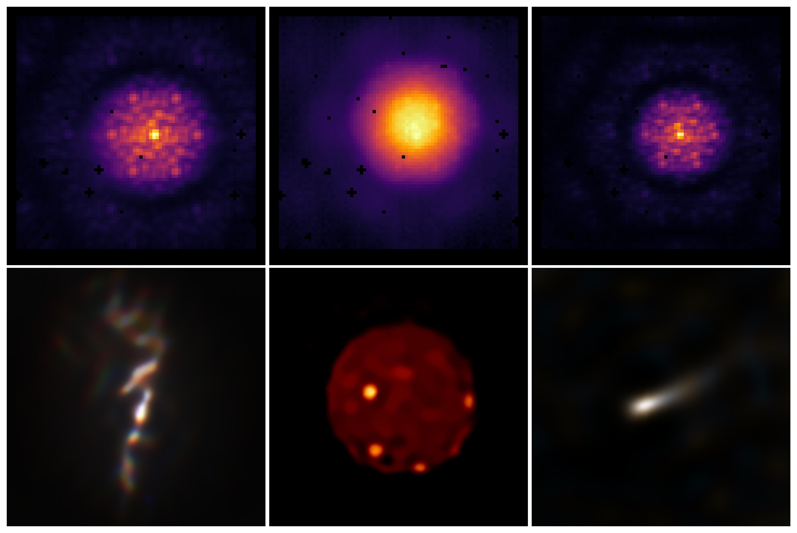
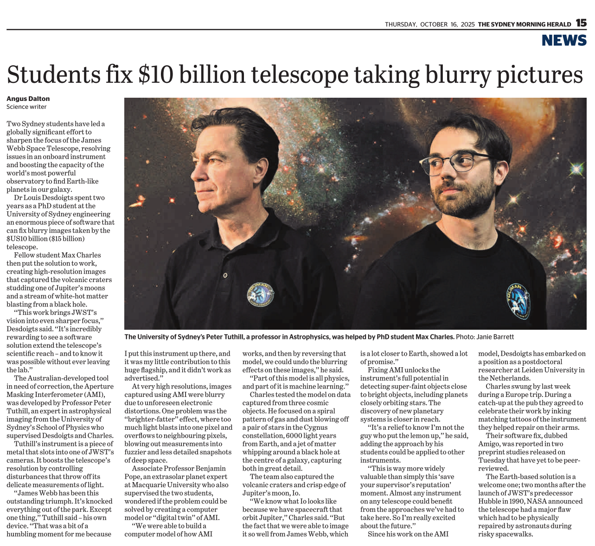

Here I have a brief description of my current research projects. Click on the images to take you to the relevant publications!
Aperture Masking Interferometry on JWST
On board the James Webb Space Telescope is the Aperture Masking Interferometer (AMI), which is a thin piece of titanium metal with several holes cut out of it, sitting in the primary beam of the telescope. These holes cause interferometric fringes to form on the detector, which makes raw AMI data look very different to normal images (see top row of image below).
However, when it came to analysing AMI data, there was an unexpected complication: the infrared detector suffered from severe charge bleeding, which distorted the interferometric measurements. In his PhD, my colleague Dr. Louis Desdoigts developed amigo, a software designed to model and mitigate these detector effects (among other things) for AMI data. I have extended this by developing dorito, a software used to reconstruct images from AMI data (see bottom row of above image).
